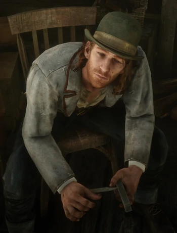

Sean Macguire
Insolent, ce jeune braqueur irlandais descend d'une longue lignée de criminels et d'opposants politiques. Il cherche toujours à prendre part à l'action et se montre très sûr de lui... peut-être un peu trop.
Histoire
Sean est né à Donegal, en Irlande, et il y a passé une grande partie de son enfance. Le père de Sean, Darragh MacGuire, était un hors-la-loi Fénian qui a fui en Amérique avec son fils avant d'être traqué et tué. À un certain moment avant 1898, Sean a tenté de voler et de tuer Dutch mais il a échoué. Dutch lui a alors proposé de rejoindre sa bande. Sean est un personnage sympathique et plein d'humour qui aime passer son temps à raconter des histoires. Il aime se moquer d'Arthur en le surnommant l' "Anglais" ou encore le "Roi Arthur". Sean semble avoir une relation particulière avec Lenny qui a déjà essayé de lui apprendre à lire, puisque Sean est analphabète. Lenny expliquera à Arthur qu'il appréciait Sean tandis que ce dernier exprime souvent son aversion pour Micah. Sean a un accent irlandais différent de celui de Molly qui, elle, possède un accent typique de la ville de Dublin. Sean a des cheveux roux et mi-longs. Il porte une veste d'un bleu délavé, un haut blanc et un gilet à motifs marron. Sean porte souvent un chapeau melon de la même couleur que sa veste.
Naissance - Irlande
Statut - Décédé (1899)
Sexe - Masculin
Nationalité - Irlandais
Occupation - Hors-la-loi
Rôles - Protagoniste
Anecdote Après avoir terminé la mission "Un village pittoresque", la tombe de Sean se trouve légèrement au nord de Clemens Point.